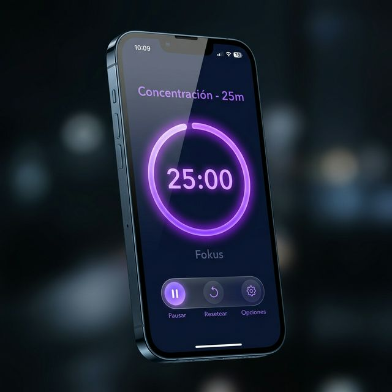
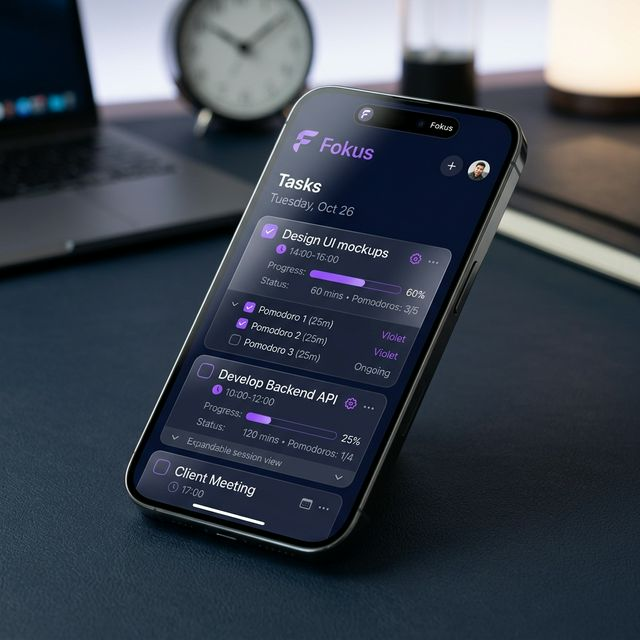

Empezá hoy.
Tu versión más productiva
te espera.
Gratis. Sin publicidad invasiva. Sin necesidad de cuenta.
Descargar en Google PlayPara Android · Mayores de 13 años
Fokus transforma la manera en que trabajas. Con la técnica Pomodoro, sesiones de enfoque medibles, alarmas inteligentes y estadísticas reales — deja de procrastinar y empieza a lograr.

Diseñado para la persona seria que quiere resultados reales, no una simple app de reloj.
Cada ciclo incluye enfoque + tolerancia + descanso. El reloj avanza solo entre fases con alarmas sonoras configurables. Ciclo tras ciclo, sin interrupciones.
Creá, editá y eliminá tareas con sub-sesiones individuales. Cada Pomodoro dentro de una tarea tiene su propio tiempo configurable.
Pomodoros completados, descansos, minutos de foco y racha de días. Visualiza tu progreso en tiempo real sin complicaciones.
Midnight, Ocean, Aurora, Ember, Sakura, Forest y Titanium. Personalizá tu experiencia y hacé tuya la app con un solo toque.
Elegí tu tipo de alarma: notificación, alarma, tono o silencioso. Sonidos nativos del celular que funcionan siempre, hasta con la pantalla apagada.
Cambiá entre modo oscuro y claro cuando quieras. Disponible en Español e Inglés. Diseño que se adapta a vos, no al revés.
Desarrollada por Francesco Cirillo en 1980, es la técnica más efectiva para combatir la procrastinación. Fokus la moderniza.
Creá la tarea, definí cuántos Pomodoros estimás necesitar y configurá el tiempo de cada sesión entre 5 y 60 minutos.
Sin distracciones. El temporizador avisa con 3 golpecitos al iniciar y con un tono de alerta 10 segundos antes de terminar.
Transición automática post-Pomodoro (5 secondos de tolerancia) y luego descanso calculado como 1/5 del tiempo de enfoque.
Al completar todos los Pomodoros de una tarea, se marca automáticamente como completada. Tus estadísticas crecen. Vos crecés.

Siete paletas premium diseñadas para cada estado de ánimo y hora del día.
Gratis. Sin publicidad invasiva. Sin necesidad de cuenta.
Descargar en Google PlayPara Android · Mayores de 13 años